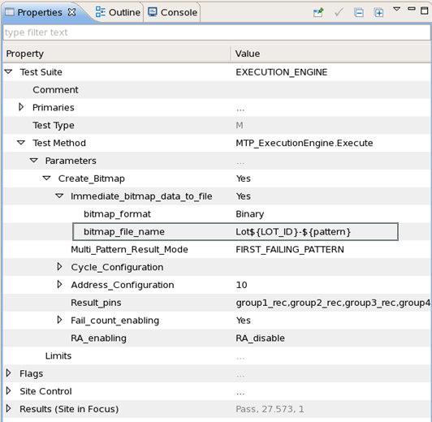

Setting parameters for the ExecutionEngine test method
To edit the parameters of a test method:
- Select it in the tabular editor.
The parameters of the test method are displayed in the Test Suite window:

- Double-click the parameter that you want to edit and enter a new parameter (by typing it or by choosing it from a pop-up, depending on the type of parameter).
Functional changes
- Introduced before SmarTest 6.3.2
- MTP 3.0.1: Parameters are now set in the Test Suite window.
- MTP 3.2.2: Adds a new parameter: bitmap_file_name.